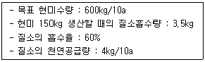

종자산업기사 (2011-06-12 기출문제)
1과목: 종자생산학 및 종자법규
1. 지상발아를 하는 작물은?
- 옥수수
- 완두
- 콩
- 보리
(정답률: 58%)

2. 채소 우량종자의 구비조건으로 거리가 먼 것은?
- 발아율 및 발아세가 양호할 것
- 유전적인 면에서 품종과 계통이 바를 것
- 후대에서 유전형질의 분리가 일어날 것
- 종묘생산후 취급(건조, 조제, 가공 및 저장 등)이 적정할 것
(정답률: 71%)
3. 번식 수단으로 식물학상의 종자를 이용하는 것은?
- 벼
- 쌀보리
- 콩
- 옥수수
(정답률: 78%)
4. 주로 보리와 밀의 겉깜부기병과 줄무늬병 방제를 위하여 사용하는 것은?
- 메프로닐 분제(논사)
- 베노밀·티랑 수화제(벤레이트티)
- 가스가마이신 액제(가스가민)
- 카복신·티랑 분제(비타지람)
(정답률: 34%)
5. 종자 포장재료로 이용되고 있는 방습질(防濕質)류의 가장 큰 장점은?
- 무게가 가벼워진다.
- 종자 함수량에 변화가 적다.
- 포장비용이 많이 들지 않는다.
- 재고목록을 비치하지 않아도 된다.
(정답률: 74%)
6. 공중습도가 높을 때 특히 수정이 잘 안되는 작물은?
- 배추
- 고추
- 양파
- 당근
(정답률: 67%)
7. 주로 자가불화합성을 이용하여 1대 교잡종자를 채종하는 작물은?
- 고추
- 배추
- 오이
- 참외
(정답률: 79%)
8. 경실종자(硬實種子)가 아닌 것은?
- 자운영
- 고구마
- 콩
- 아까시나무
(정답률: 47%)
9. 종자보증의 효력이 있는 경우는?
- 포장 및 종자검사를 통해 보증을 받았거나 보증표시를 하지 않은 경우
- 보증의 유효기간이 이미 지난 경우
- 보증종자의 포장을 임의로 개장한 다음 다시 포장을 한 경우
- 보증종자의 포장을 종자관리사의 입화하에 개장하여 다시 분포장한 경우
(정답률: 91%)
10. 경기도 의정부시에 주된 종자생산시설을 갖고 있는 A씨가 종자업을 등록하려 한다. 종자업 등록신청서를 누구에게 제출하여야 하는가?
- 의정부시장
- 경기도지사
- 국립종자원장
- 농림수산식품부장관
(정답률: 59%)
11. 종자의 순도검사를 통하여 알 수 있는 것은?
- 종자표본의 발아능력
- 종자표본의 수분함량
- 종자표본의 병해 정도
- 종자표본의 고유 특성을 가진 종자비율
(정답률: 74%)
12. 당근의 채종재배시 정지(整枝)를 하는 이유로 가장 적합한 것은?
- 조기채종
- 개화기 조절
- 결실율 조절
- 종자성숙도의 균일화
(정답률: 47%)
13. 발아검사에서 발아묘의 판별 및 발아율 검사에 대한 설명으로 틀린 것은?
- 발아율은 발아묘 개수 비율로 표시하며, 평균발아율은 반올림한 정수로 기록한다.
- 발아시험 결과는 반복간 차이가 최대허용오차 이내일 때는 신뢰할 수 있다.
- 복수발아종자는 단위당 한 개의 정상묘만 시험결과 계산에 넣는다.
- 발아율 검정에서 경실종자 및 휴면종자를 제외하고, 백분율로 계산한다.
(정답률: 58%)
14. 저장 중 종자가 발아력을 상실하는 원인으로 가장 관계가 먼 것은?
- 원형질단백의 응고
- 효소의 활력 저하
- 저장양분의 소모
- 수분함량의 감소
(정답률: 43%)
15. 종자산업법상 품종의 보호요건이 아닌 것은?
- 구별성
- 상업성
- 균일성
- 안정성
(정답률: 89%)
16. 다음 중 종자산업법상 가장 무거운 벌칙이 적용되는 항목은?
- 위증죄
- 거짓표시의 죄
- 무등록 종자업의 죄
- 침해죄
(정답률: 63%)
17. 유사분열을 일명 무슨 분열이라 하는가?
- 감수분열
- 동형분열
- 이형분열
- 배우자분열
(정답률: 63%)
18. 세포질 유전자적 웅성불임을 이용한 채종에서 화분친의 유전형으로 가장 적합한 것은? (단, 핵내 임성회복유전자는 Rf gene)
- (S) Rfrf
- (S) rfrf
- (F) RfRf
- (F) rfrf
(정답률: 57%)
19. 봉지씌우기(피대)를 필요로 하는 것은?
- 인공수분에 의한 F1채종
- 시판을 위한 고정종 채종
- 웅성불임성을 이용한 F1채종
- 자가불화합성을 이용한 F1채종
(정답률: 79%)
20. 발아검사시 치상 재료를 모래나 흙 또는 물로 할 경우 적당한 pH의 범위는?
- 4.0 ~ 6.0
- 6.0 ~ 7.5
- 7.5 ~ 8.5
- 8.5 ~ 10.0
(정답률: 87%)
2과목: 식물육종학
21. 선발에 의한 유전획득량에 영향을 주지 않는 요인은?
- 선발강도
- 유전력
- 유전분산
- 자가수정
(정답률: 77%)
22. 자연 교잡율이 4% 이하에 속하는 자식성 식물은?
- 오이
- 배추
- 양파
- 토마토
(정답률: 65%)
23. 종자의 발아를 촉진시키는 화학물질에 속하지 않는 것은?
- KNO3
- H2O2
- Abscisic acid
- Gibberellin
(정답률: 90%)
24. 피자식물의 중복수정을 옳게 설명한 것은?
- 배유와 배는 모두 2n이다.
- 배유는 2n이고 배는 3n이다.
- 2개의 정핵 중에서 하나는 난핵과 합하여 배를, 다른 하나는 극핵과 합하여 배유를 형성한다.
- 2개의 정핵 중에서 하나는 난핵과 합하여 배유를, 다른 하나는 극핵과 합하여 배를 형성한다.
(정답률: 78%)
25. 생물계에서 나타나는 변이에 대한 설명으로 가장 적합한 것은?
- 질적변이는 불연속변이다.
- 수확량은 불연속변이다.
- 방황변이는 유전된다.
- 가시의 유무는 양적변이다.
(정답률: 85%)
26. 유전력에 대한 설명으로 틀린 것은?
- 유전력은 유전분산 중에서 표현형분산이 차지하는 비율이며, 육종에서의 선발효율은 예측하는 지표로 이용한다.
- 선박육종에서 환경분산이 커서 유전력이 낮은 경우에는 개체선발보다 계통선발이 바람직하다.
- 유전력은 0~1(0~100%) 사이의 값을 가지며 유전력 값이 0.52보다 크면 유전력이 높다고 하고, 0.2 보다 작으면 낮다고 한다.
- 유전력이 높다는 것은 자손의 형질이 양친의 것과 많이 닮았다는 뜻이다.
(정답률: 27%)
27. 일반적을 육종연한이 가장 길게 소요되는 교잡육종법은? (단, 세대단축을 실시하지 않는 경우)
- 계통육종법
- 집단육종법
- 1개체1계통법
- 여교잡육종법
(정답률: 48%)
28. 재배하고 있는 작물의 원산지를 파악하는데 이용되는 학설은?
- 이반인자설
- 아포체반응설
- 신키아스마설
- 유전자중심지설
(정답률: 85%)
29. 품종순도의 퇴화원인이 아닌 것은?
- 돌연변이
- 이형유전자의 분리
- 근교약세
- 종자갱신
(정답률: 95%)
30. 잡종의 자손에서 볼 수 있으며 유전법칙에 의하여 일어나는 변이는?
- 방황변이
- 환경변이
- 돌연변이
- 교배변이
(정답률: 53%)
31. 여교잡육종법 이용시 고려할 점으로 거리가 먼 것은?
- 목표로 한 일회친(一回親) 형질의 유지
- 교배방향
- 조합능력
- 요교잡의 횟수
(정답률: 43%)
32. 자가불화합성을 이용하여 1대잡종(F1)을 생산하는 주요 작물은?
- 배추, 양배추, 브로콜리
- 수박, 무, 당근
- 멜론, 배추, 양배추
- 피망, 순무, 브로콜리
(정답률: 75%)
33. 도입품종에 대하여 도입 1년차에 실시하는 검정시험으로 가장 거리가 먼 것은?
- 적응성 검정시험
- 품종 비교시험
- 조합능력 검정시험
- 생산력 검정시험
(정답률: 53%)
34. 고구마 육종시 개화유도에 가장 효과적인 방법은?
- 춘화처리
- 접목과 단일처리
- 비배법
- 파종기 조절
(정답률: 54%)
35. 식물 육종에 활용되는 중요한 변이로 볼 수 없는 것은?
- 일시적 변이
- 돌연변이
- 교배변이
- 양적변이
(정답률: 82%)
36. 하디-바인베르크(Hardy-Weinberg) 법칙에 대한 설명으로 틀린 것은?
- 타식성 작물에 적용된다.
- 돌연변이, 이주 및 도태가 없는 집단에 적용된다.
- 최초의 유전자 비율에 따라 안정된 후의 비율이 정해진다.
- 안정된 후의 집단내에서 homo 와 hetero 개체수는 같다.
(정답률: 47%)
37. 생산력 검정시험에서 선발된 계통을 대상으로 지역적응성 검정시험을 실시하게 되는 주된 이유로 가장 적합한 것은?
- 신품종의 보급지역을 결정하기 위하여
- 신품종의 종자 생산량을 늘리기 위하여
- 지역별 종자생산 및 보급계획을 수립하기 위하여
- 신품종의 재배기술을 지역별로 확대 보급시키기 위하여
(정답률: 45%)
38. 자가수분이 가장 용이하게 되는 경우는?
- 장벽수정인 경우
- 이형예인 경우
- 자가불화합성인 경우
- 폐화수정인 경우
(정답률: 71%)
39. 유전자원을 수집·보존해야 할 가장 합당한 이유는?
- 멘델 유전법칙을 확이하기 위함
- 다양한 육종소재로 활용하기 위함
- 야생종을 도태시키기 위함
- 개량종의 보급을 확대시키기 위함
(정답률: 85%)
40. 특정한 한 개의 우량형질을 이전하고자 할 때 주로 이용하는 육종방법은?
- 여교잡육종법
- 잡종강세육종법
- 돌연변이육종법
- 파생계통육종법
(정답률: 73%)
3과목: 재배원론
41. 환상박피(Girdling, Ringing)에 의하여 과수의 개화, 결실을 조절하는 것과 가장 밀접한 관계가 있는 것은?
- 일장효과
- 춘화처리
- 감온성
- C/N율
(정답률: 63%)
42. 줄기 선단의 분열조직에서 합성되어 정아의 생장을 촉진하고 아래로 확산하여 측아의 발달을 억제하는 식물생장조절물질은?
- Auxin
- MH
- B-Nine
- 2,4-DNC
(정답률: 82%)
43. 토양이 강산성으로 변할 경우 용해도가 증가되는 원소는?
- P, B, Mg
- Ca, Zn, Mg
- Al, Cu, Mn
- P, Mg, Mn
(정답률: 64%)
44. 수도작에서 지연형 냉해에 가장 민감한 시기는?
- 출수 전 30 ~ 25일경
- 출수 전 35 ~ 30일경
- 출수 전 45 ~ 40일경
- 출수 전 50 ~ 45일경
(정답률: 50%)
45. 다음 중 벼의 도열병 저항성과 가장 관련이 깊은 특성은?
- 조만성
- 초형
- 내비성
- 출수생태
(정답률: 50%)
46. 콩의 기원지로 가장 적합한 것은?
- 페루
- 중국
- 멕시코
- 미국
(정답률: 73%)
47. 혼파의 특징으로 옳은 것은?
- 채종작업이 용이하다.
- 수확작업이 간편하다.
- 병충해 방제가 용이하다.
- 재해나 병충해에 대한 위험성이 분산된다.
(정답률: 70%)
48. 입단의 형성과 파괴에 대한 설명으로 옳은 것은?
- 경운하면 토양 통기가 좋아지고 입단의 결합을 유지하는 부식이 분해되어 입단이 파괴된다.
- 멸균처리한 토양이 살균제 처리나 무처리 토양에 비하여 입단형성이 잘 된다.
- 건조상태에서 갑자기 비가 오면 입단이 급격히 팽창하여 입단이 형성된다.
- 나트륨(Na) 비료의 시용은 입단형성을 촉진한다.
(정답률: 67%)
49. 다음의 조건하에서 10a의 논에 시용할 질소의 성분량은? (단, 최종값에서 소수점 이하는 절사)

- 10kg
- 12kg
- 14kg
- 16kg
(정답률: 41%)
50. 작물의 종류에 따라 차이가 있으나 일반적으로 작물재배에 가장 적당한 토성 범위는?
- 사토 ~ 약양질사토
- 양질사토 ~ 강양질사토
- 사질양토 ~ 양질식토
- 양질식토 ~ 식토
(정답률: 89%)
51. 벼 재배시 이화명나방의 피해가 큰 지역에서 심어야 할 품종의 특성은?
- 내충성
- 내병성
- 내습성
- 내건성
(정답률: 92%)
52. 식물세포 원형질만 팽만 상태는?
- 수분 포텐셜(ψw) = 0 bar
- 수분 포텐셜(ψw) = -5 bar
- 수분 포텐셜(ψw) = -10 bar
- 수분 포텐셜(ψw) = -15 bar
(정답률: 66%)
53. 벼의 이상적인 초형(type of plant)으로 가장 거리가 먼 것은?
- 엽초가 길다.
- 상위엽일수록 직립한다.
- 이삭이 지엽 밑에 위치한다.
- 각 잎이 공간적으로 균일하게 분포되어 있다.
(정답률: 36%)
54. 내건성이 강한 작물의 형태적 특성이 아닌 것은?
- 잎맥(葉脈)과 울타리조직(柵狀組織)이 발달한다.
- 체적에 대한 표면적의 비(比)가 작다.
- 지사부에 비해 근군(根群)의 발달이 좋다.
- 잎의 두께가 얇다.
(정답률: 69%)
55. 답전윤환(沓田輪換)재배의 효과라고 할 수 있는 것은?
- 지력감퇴
- 잡초 감소
- 수량 감소
- 기지현상의 증가
(정답률: 92%)
56. 원예작물로서 과채류에 속하는 것은?
- 아스파라거스
- 수박
- 완두
- 상추
(정답률: 95%)
57. 가스상태로 작물의 생리작용에 영향을 주는 식물생장조절물질은?
- ABA
- GA
- Ethylene
- Auxin
(정답률: 65%)
58. 작물은 광합성에 의해서 유기물을 합성하는 동시에 호흡에 의해서 유기물을 소모한다. 호흡을 무시하고 본 절대적인 광합성을 무엇이라 하는가?
- 광포화점
- 보상점
- 진정광합성
- 외견상광합성
(정답률: 48%)
59. 방사선 중 생물적 효과가 가장 큰 것은?
- α
- β
- γ
- ρ
(정답률: 91%)
60. 일반재배에서 육묘가 필요한 이유와 관련이 적은 것은?
- 종자의 절약
- 토지의 집약적 이용
- 직파가 불리한 경우
- 추대 촉진
(정답률: 65%)
4과목: 식물보호학
61. 완전변태를 하는 해충은?
- 진딧물
- 대벌레
- 총채벌레
- 딱정벌레
(정답률: 59%)
62. 밭에서 주로 많이 발생하는 잡초는?
- 올방개
- 명아주
- 사마귀풀
- 가래
(정답률: 79%)
63. 저온장해에 대한 설명으로 틀린 것은?
- 식물체 내에 결빙이 생겨서 받는 피해를 동해(freezing injury)라 한다.
- 동결(freezing)과 융해(thawing)의 반복은 식물체의 동결온도를 낮추는 효과가 있다.
- 동해에 강한 작물일수록 세포내 결빙이 적다.
- 봄에 일찍 파종하는 작물이나 과수의 꽃은 상해(frost injury)를 받기 쉽다.
(정답률: 79%)
64. 우리나라에서 토양 내의 토양 병균 및 선충을 방제하기 위한 토양소독제로 널리 사용되고 있는 약제는?
- captan
- PCNB
- maneb
- dazomet
(정답률: 65%)
65. 농약의 작용기작이 바르게 연결된 것은?
- 파라치온(유기인계농약) - AChE 활성 저해
- 니코틴제 – 시냅스전막 저해
- 보르도액 – 유호아의 세포벽 성분 치환작용
- EBI살균제 – 기틴 생합성 저해
(정답률: 60%)
66. 균핵(sclerotium)에 관한 설명으로 틀린 것은?
- 균류에 의해 형성된다.
- 주요 표징의 일종이다.
- 부적당한 외부 환경에 쉽게 영향 받아 죽는다.
- 균사로 이루어진 유사 조직이다.
(정답률: 56%)
67. 논에 발생하는 다년생 잡초는?
- 피
- 둑새풀
- 너도방동사니
- 사마귀풀
(정답률: 85%)
68. 단위생식을 하는 곤충은?
- 배추흰나비
- 송충알좀벌
- 체체파리
- 밤나무혹벌
(정답률: 58%)
69. 작물생산 과정에서 나타나는 피해로 다음 중 가장 직접적인 피해는?
- 잡초격발에 의한 농지 활용도 감소
- 잡초격발에 의한 제초제 과다사용으로 토양 악화
- 벼 잎집무늬마름병(잎집얼룩병) 발생에 의한 독성물질 증가
- 벼잎굴파리 피해 증가에 의한 수량감소
(정답률: 58%)
70. 복숭아혹진딧물에 대한 설명으로 옳은 것은?
- 나비목에 속한다.
- 복숭아나무만을 가해한다.
- 우리나라에서 월동하지 못한다.
- 풀잠자리류, 기생벌 등이 천적이다.
(정답률: 55%)
71. 농약의 살포액을 만드는데 가장 부적당한 물의 조건은?
- 약산성
- 중성
- 알칼리성
- pH 와는 무관
(정답률: 74%)
72. 생활사에 따른 잡초의 분류로 틀린 것은?
- 하계1년생 잡초 – 보리뺑이, 냉이
- 2년생 잡초 – 망초, 달맞이꽃
- 구근형 다년생 잡초 – 산달래, 야생마늘
- 폽고형 다년생 잡초 – 쇠뜨기, 메꽃
(정답률: 53%)
73. 분제의 물리적 성질에 해당하는 것은?
- 침투성
- 응집력
- 수화성
- 유화성
(정답률: 48%)
74. 잡초로 인한 피해로 볼 수 없는 것은?
- 작물에 부여된 광, 수분, 양분 등과 생육공간을 탈취한다.
- 병해충을 매개한다.
- 토양에 유기물을 제공하고, 토양 침식을 방지한다.
- 섭식했을 경우 가축에 해를 끼치는 경우가 있다.
(정답률: 95%)
75. 벼 해충 중에서 줄기 속을 가해하는 해충은?
- 벼애나방
- 멸강나방
- 이화명나방
- 벼물바구미
(정답률: 29%)
76. 식물 병의 발생예찰에 필요한 조사항목으로 거리가 먼 것으?
- 작물의 수확량 조사
- 작물의 생육상태 조사
- 기상환경의 변화 조사
- 병원체의 밀도 조사
(정답률: 67%)
77. 윤작을 이용한 식물병의 방제에서 작물재배 기간을 결정하는 중요 요인으로 가장 거리가 먼 것은?
- 병원체의 생존능력
- 광선에 대한 병원체의 감수성
- 병원체의 감소 및 제거 가능성
- 병원체의 개체군 밀도와 증식능력
(정답률: 70%)
78. 표징으로 진달할 수 있는 병은?
- 과꽃 위황병
- 배추 무사마귀병
- 보리 깜부기병
- 담배 모자이크병
(정답률: 46%)
79. 작물의 피해원인 중 생물에 의한 피해가 아닌 것은?
- 병원균에 의한 피해
- 해충에 의한 피해
- 바람에 의한 피해
- 잡초에 의한 피해
(정답률: 79%)
80. 농약의 휘발, 용탈 및 분해성과 관련이 있어 약해작용에 가장 관계가 깊은 농약의 물리적 성질은?
- 용해성
- 살포량
- 선택성
- 균일성
(정답률: 93%)